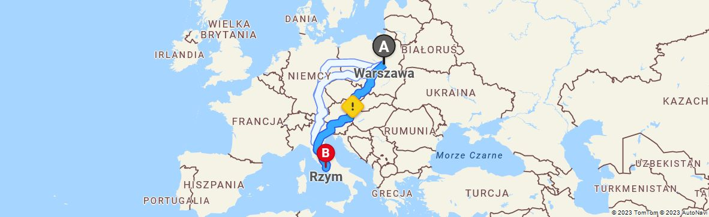

Włochy to piękny kraj – i wręcz stworzony do podróżowania samochodem. Niesamowite krajobrazy, góry, jeziora,
plaże,
winnice, średniowieczne miasteczka, a zarazem łatwy dojazd z Polski. Posiadając własne auto, możemy zobaczyć
dużo
więcej niż w przypadku lotu samolotem czy wyjazdu z biurem podróży. A do tego pokonamy całą trasę we własnym
rytmie,
odkrywając po drodze ukryte perełki. Podpowiadamy, jak najlepiej zaplanować podróż samochodem do Włoch.
Jak dojechać do Włoch
Podróż z Warszawy do Rzymu autem zajmnie nam około 16 godzin. Polecamy samolot lub inny, szybszy środek transportu.